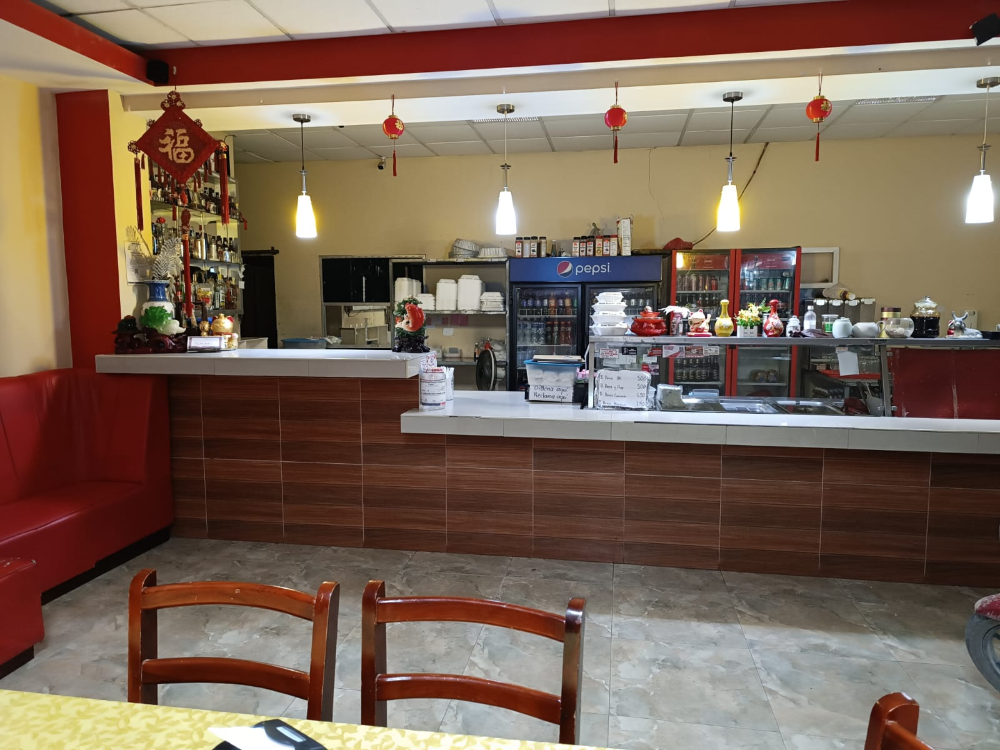
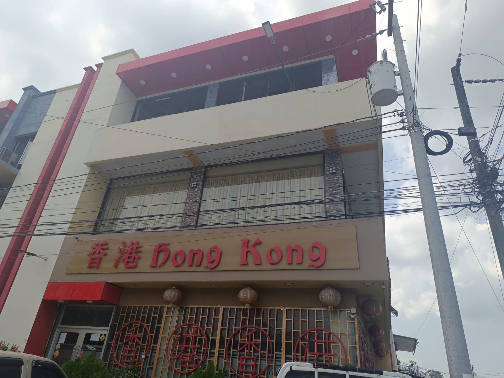
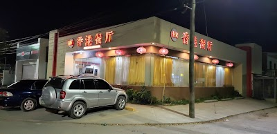

Nuevas Remodelaciones
Publicado el 11 de Abril del 2024
En una apuesta por elevar la experiencia gastronómica a nuevas alturas, el afamado restaurante Hong Kong ha anunciado un ambicioso proyecto de remodelación. Este emblemático establecimiento, reconocido por su exquisita cocina de autor y su ambiente sofisticado, se sometio a una remodelacion que promete cautivar los sentidos de sus comensales.
Contruccion de Segunda y Tercer Planta
Publicado el 28 de Enero del 2024
El emblemático restaurante Hong Kong, un referente de la auténtica cocina asiática en la ciudad, ha revelado emocionantes planes para su expansión vertical. Con el objetivo de satisfacer la creciente demanda de sus deliciosos platos y proporcionar una experiencia gastronómica aún más memorable.
Mas espacio para vehiculos
Publicado el 17 de Septiembre del 2021
El reconocido restaurante Hong Kong ha anunciado planes ambiciosos para mejorar la comodidad y conveniencia de sus clientes con la construcción de un espacio adicional para estacionamiento de vehículos. Conscientes de la importancia de la accesibilidad para una experiencia gastronómica sin preocupaciones, el restaurante invertirá en la expansión de su área de estacionamiento añadio más plazas para vehículos.